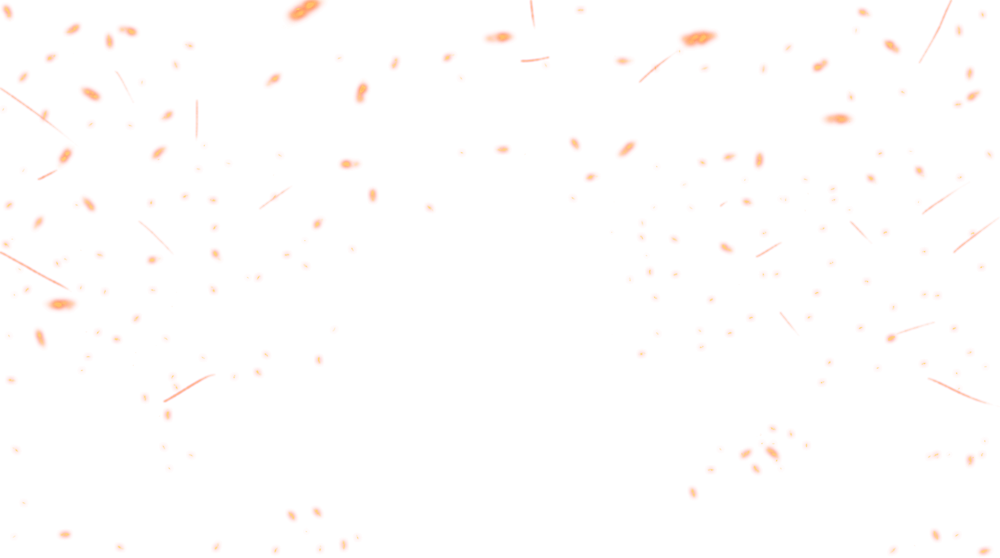
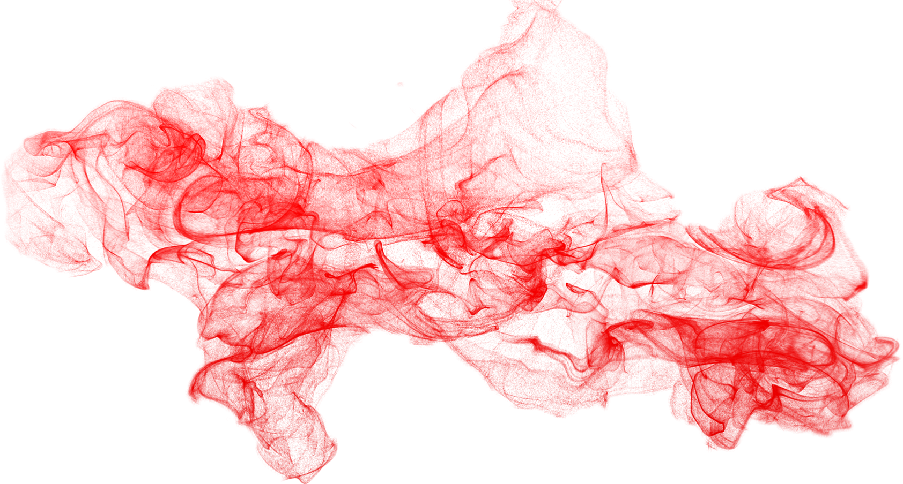
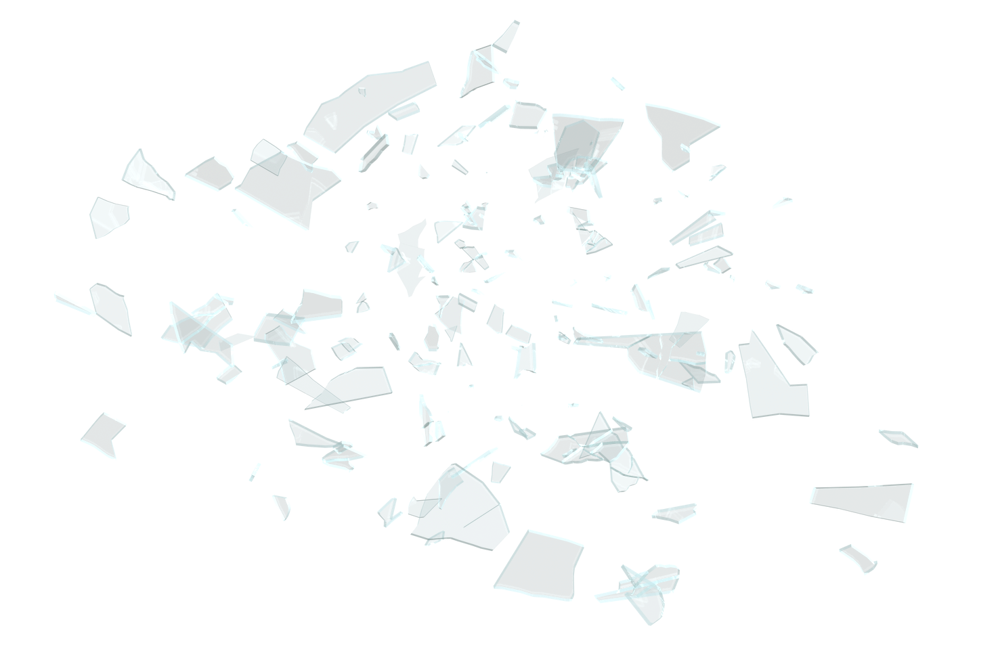

Легенда о белой змее
Однажды весной, сёстры отправились на сбор весенних трав. Только Шидалини с Бахри остались дома. Шидалини тренировалась с посохом на крыше их дома, как вдруг заметила вдали высокие облака пыли и дыма.
Оттуда во все стороны разлетались птицы, разбегались люди и звери. Даже величественные скалы ревели от ужаса. Шидалини спустилась вниз и позвала Бахри, Сестру Хаоса, проверить что там происходит. Бахри схватила свой кнут и сёстры побежали туда. Представшая перед ними картина ужасала- колоссальная белая змея ползла по песчанному дну каньона уничтожая всё на своём пути. Бахри, охваченная яростью, одним ударом своего кнута разрубила змею пополам. Но змея даже не обратила на Сестру Хаоса внимания. За долю секунды две половины змеи срослись вместе. Тогда Шидалини ударила змею посох по огромной голове, проломив змеиный череп. За долю секунды рана срослась.
Тогда Бахри и Шидалини принялись атаковать змею вместе, нанося удары по всему телу огромного монстра. Несмотря на силу и опыт сестёр, все попытки были тщетны. Уставшие сёстры уже было отчаялись, как им в голову пришла идея. Обьеденившись в одно тело, с помощью ветра Шидалини подняли они песок в воздух, закружили вокруг змеи и расплавили яростью Бахри. Змея была заточена в стеклянной горе. И до сих пор, где-то есть эта прозрачная гора в которой веками томится белая змея.


